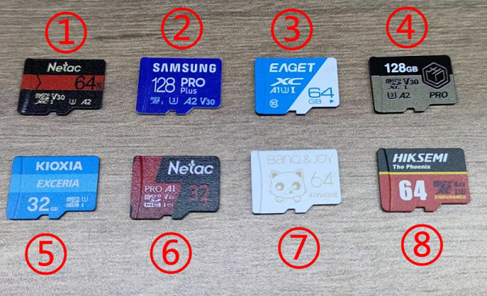
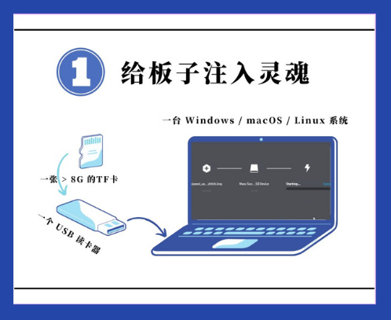
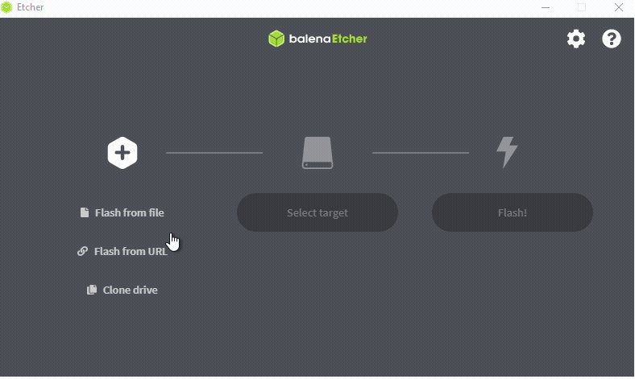
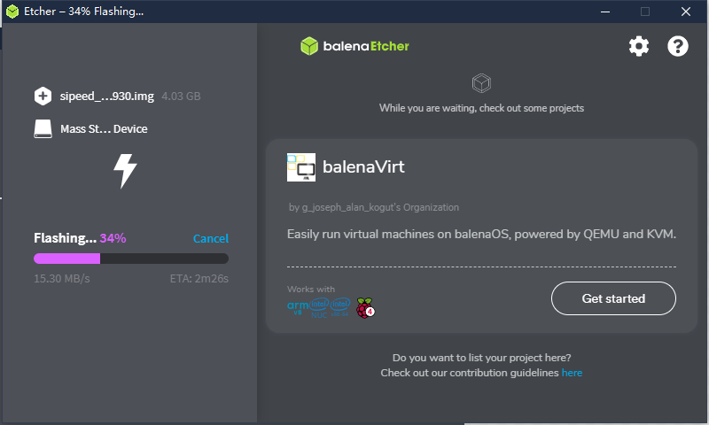
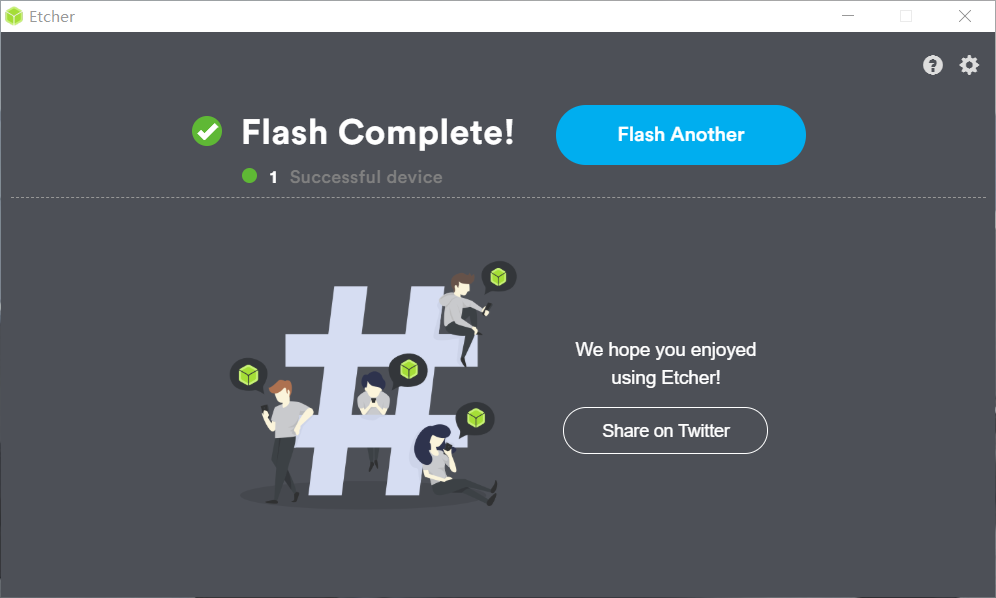
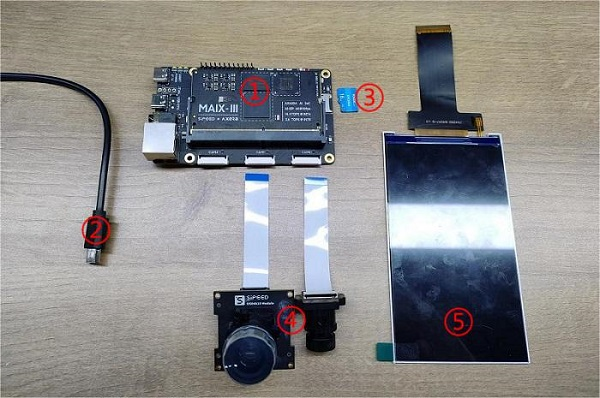
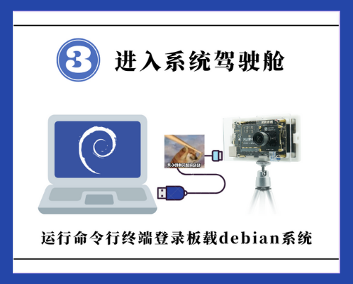
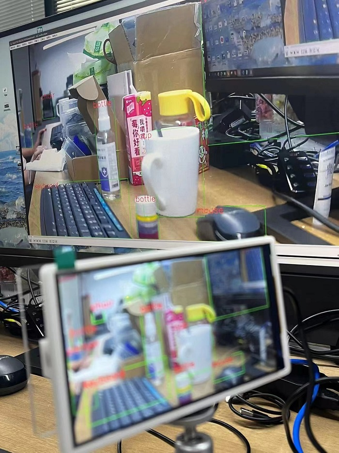

English
EnglishAXera-Pi Guide
Update history
| Date | Version | Author | Update content |
|---|---|---|---|
| 2023-06-15 | v0.3 | wonder |
|
Board Usage
To make it easier to use this board, we make this guide.
OS introduction
The default AXera-Pi kit has no onboard memory storage, so it's necessary to prepare a TF card to boot this device.
For Axera-Pi, we provide Debian11 Bullseye image file.
TF card which has been flashed system image can be bought from Sipeed aliexpress, otherwise you need to prepare your own system image TF card by following steps.
Choose TF card
People who have bought the TF card which has been burned system image can skip this chapter and read start Linux to use this board
We have tested the read and write speed of some TF cards on Axera-pi, for users to make the choice of TF card.

Some TF cards are added to test after this photo, so they are not in this photo but they can be recognized by their number.
| Number | Model | Write speed（Write 160MB） |
Read speed（Read 160MB） |
|---|---|---|---|
| 1. | Netac A2 P500-HS-64GB | 2.04697 s, 80.0 MB/s | 1.8759 s, 87.3 MB/s |
| 2. | Samsung microSDXC UHS-I 128G (Blue card) | 2.53387 s, 64.7 MB/s | 1.99882 s, 82.0 MB/s |
| 3. | EAGET T1 series 64G | 6.56955 s, 24.9 MB/s | 7.13792 s, 23.0 MB/s |
| 4. | Keychron microSDXC UHS-I 128G | 2.28133 s, 71.8 MB/s | 1.92001 s, 85.3 MB/s |
| 5. | KIOXIA microSDXC UHS-I 32G | 6.71284 s, 24.4 MB/s | 2.36794 s, 69.2 MB/s |
| 6. | Netac A1 32GB | 4.31411 s, 38.0 MB/s | 2.00759 s, 81.6 MB/s |
| 7. | BanQ JOY card platinum 64G | 9.08105 s, 18.0 MB/s | 9.02843 s, 18.1 MB/s |
| 8. | Hiksemi HS -TF- P2 64G | 2.28079 s, 71.8 MB/s | 1.87698 s, 87.3 MB/s |
The following TF cards are not in this photo but we also tested them.
| Number | Model | Write Speed (Write 160MB) |
Read Speed (Read 160MB) |
|---|---|---|---|
| 1. | Lexar 64GB TF（MicroSD）C10 U3 V30 A2 | 2.59644 s, 63.1 MB/s | 1.9106 s, 85.8 MB/s |
| 2. | Lexar 128GB TF（MicroSD）C10 U3 V30 | 6.73793 s, 24.3 MB/s | 6.94079 s, 23.6 MB/s |
Burn system image

We only reserved EMMC pad on board, so we need a TF card which has been burned system image to boot linux on this board.
Get image
Because the system image is about 2G memory storage, we only provide mega link to download.
Visit mega Click me to download the image file.
The file name ends with img.xz is the compressed system image file, and the other file name ends with img.xz.md5sum is the check file, which we use to check the compressed system image file.
The name rule of compressed system image file is Image provider _ Target chip _ Linux distribution _ Created time + img.xz
The check file should be used in Linux, and users using windows10 or windows 11 can use the wsl to prepare a Linux environment
Run command md5sum -c *.md5sum* in the path where compressed system image file and check file are to check the compressed system image file.
| Check succeeded | Check failed |
|---|---|
 |
 |
If there is some thing with the compressed system image file, it will show FAILED. Normally we don't need to check the compressed system image file, this is only for those who need it.
Burn image
Before burning the image, we need to do the following preparation:
- A TF card with a storage capacity card over 8GB. It is recommended to buy an official image card, otherwise it may lead to a bad experience due to the bad performance of the TF card
- A card reader: It is recommended to use the card reader that supports USB3.0, this will save time on burning the system image card.
- Etcher application: Download the edition of this application suitable for your computer system.
Burning system image steps
Run Etcher application, click Flash from file, choose the compressed system image img.xz file， then click Select target to choose the TF card，click FLASH to burn your TF card.
Burn the TF card

| Burning | Finish burning |
|---|---|
|  |  |
Note that after finishing burning the application shows Flash Complete! and Successful.
Finishing the above steps, the computer will ask us to format the udisk, we just ignore this information and remove the TF card (Because we have made Successful in Etcher), prepare for the following operations.
Burning Questions
1. After selecting system image, Etcher shows error.
Rerun Etcher application to solve this error due to software cache or other issues
2. After finishing burning software the application shows FAILED not Successful
Reburn the TF card.
3. The storage capacity of tf card is too small
In this case, those who use Windows and MaxOS can use SD Card Formatter to format tf card, and those who use Linux can format the tf card by Gparted.
Boot System
Finishing burning system image into tf card, we can assemble this board and boot this device.

Assemble this board
Those who have bought the
Full board packagecan skip these steps and visit [boot Axera-pi] to start.
Preparation
- An AXera-Pi development board
- At least one USB3.0 connector to connect device(This board may fail to boot because of insufficient power supply from USB2.0)
- A tf card which has been burned system image
- GC4653 camera or OS04a10 camera
- The 5 inch MIPI screen suitable for Axera-pi

Follow these steps to make sure you assemble them correctly
- Set the screen and the board as shown in the image below, and connect them.
- Insert tf card which has been burned system image into the card slot on Axera-pi.
- Connect the camera with Axera-pi as shown in the image below, make sure you have removed the cover on the camera after finishing connecting.


Camera connection
There are 2 versions of camera, make sure the 1 on the camera matches the 1 on the board. Wrong connection will burn and destroy the camera.

Different onboard camera FPC connector needs different configuration, we use CAM0 as the default one.
Boot AXera-Pi
Connect both USB-UART and USB-OTG port with computer by USB type-c cable to boot AXera-Pi, make sure you have inserted the tf card which has been burned system image.

Because of the change of screen version, visit bad display if your screen does not display the picture well.
In 20221013 we update the power-on phenomenon:
- The 3.5mm stereo connector plays the music if connected with device.
- 5 inches screen displays picture.
- The logs are printed to USB-UART port, run serial port application to see it if you need.
Here are the drivers for CH340 which is the USB-UART chip on Axera-Pi, install it if you can't see the serial device on your computer.
CH34x Windows driver
CH34x Linux driver
If logs are not printed on serial terminal, press RST key on AXera-Pi to restart device.
And those who use Ubuntu22.04 may not be able to open serial port (ttyUSB), read this to see the solution.

DRAM 1 GiBin the log is not accuracy, in system we can check there is2 GiBmemory.
Login AXera-Pi
When the logo above is displayed on the screen of AXera-Pi, the system has finished booting, and we can login to AXera-Pi.

The first time to login to device, we need to use serial port application to open the serial port to communicate with the device to login, and using SSH login is also OK if you know the ip address of your board.
MobaXterm is a ultimate toolbox for remote computing, we use this software to run our command on the board for example.

Login via serial port
We take MobaXterm as an example serial port software, you can use your favorite one.
In MobaXterm, we create a serial session. Set baudrate 115200, then click OK to create it.
Then click the created serial session to open the serial port to build communication.
Run the serial port application, use username root and password root to login.
The password is not displayed when you enter it, so just retry if you fail to login.
Login by SSH
To login by SSH, we need to know the ip address of Axera-Pi.
Traditional ip address
We make Axera-Pi and the computer in a same network environment, then run command ifconfig on Axera-Pi to get the ip address of Axera-Pi in this network environment.
But you need to make sure you have connected Axera-Pi to network, visit Connect to network to know how to connect to network.
RNDIS
Connect the computer with USB-OTG port on Axera-Pi.

Normally RNDIS is driver free in Linux, and in Windows we need to update the driver Click me, for macos it needs to build and install horndis to use RNDIS.
Deflaut RNDIS driver error in Windows:

Run command ifconfig, we can see there is a usb device with IP 192.168.1.233, we'll use this ip address many times in the following content.
Login to board
Up to now you have get one of your ip address, run command ssh {username}@{ip address} to connect to your board.
Here we take the RNDIS ip address for example to connect Axera-Pi by SSH, and the username is root, you can use other ip address or username you like if you have created the new user.
ssh root@192.168.233.1
Connect to network
Axera-Pi connects to network via network cable or wireless module.
Connect by Ethernet
Connect the board ethernet port with a network gateway by network cable.
Run command ifconfig eth0 to see whether there is the ip address.
If there is no ip address of eth0 after connecting with network gateway, run command dhclient eth0 & to get the ip address manually.
And we can also use command ifdown eth0 to disable Ethernet, and then use ifup eth0 --force to restart Ethernet to get the ip address.
Wireless network
Run command
ifconfig wlan0to see whether there is the wireless device first, if there is no wireless device, visit AXera-Pi Q&A to solve this problem. And only 2.4GHz wireless network is feasible.Run command
nmtui-connectto open a wireless internet graphical interface.
- Run command
ifconfig wlan0to see whether there is the ip address.

Besides, Run command nmcli device wifi connect Sipeed_Guest password qwert123 can also connect to wireless network, change the Sipeed_Guest into your wireless network name and change qwert123 into your wireless network password. It will autoconnect to the wireless network when board boots.
Config System
System time
Maix-III AXera-Pi uses the NTP protocol to update the system time. You can run the date command to get the current system time.
After connecting to Internet, system will automatically run
ntpdate-debianto update system time.
Change timezone
Maix-III AXera-Pi default timezone is GMT+8, you can change it with command dpkg-reconfigure tzdata if necessary.
Update time
Run ntpdate-debian command after connecting Maix-III AXera-Pi to network to update time.
Install application
Based on debian, we can use apt to install the software on Maix-III AXera-Pi. Change the software resource if you think it's slow to download the software.
Here we install gcc, gparted.
sudo apt update
sudo apt install gcc gparted
Reboot/Shutdown device
For Linux we suggest rebooting or shutting down the device by command line instead of disconnecting the USB cable or clicking the reset key, which may destory the file system.
Run command reboot to restart device.
reboot
Run command shutdown to power off device.
poweroff
Resize system storage
Run command lsblk to see the partition information, then resize the memory partition by command cfdisk /dev/mmcblk2.
Then the following similar interface shown, and we choose /dev/mmcblk2p2 by arrow keyboard ↑ ↓, select the Resize below by arrow keyboard ← →.
The whole free space is resized by default, and you can enter your desired memory storage.

Enter your desired memory storage, and press Enter keyboard to save your temp change. Use arrow keyboard ← → and choose Write to apply your change, and enter yes to confirm the change.
Use arrow keyboard ← → and select Quit to quit the storage partition.
Finishing these, we run command df -h to see the disk space usage, and we can see that the resized memory storage is not applied, we use command resize2fs /dev/mmcblk2p2 to change the size of mmcblk2, and run command df -h again to see the applied change.
Run
rebootif there is some trouble resizing the storage memory.
Boot script
The boot script is in /boot and named rc.local, you can edit it if you need.
The boot script uses the root directory / by default, for example, if you want to run /home/run.sh at startup:
- Use the absolute path to run the script background
/home/run.sh &, if it's not running background we may not be able to control the board by command line anymore. - Use the relative path to run the script background
cd /home && ./run.sh &, note that the path is different from the absolute path.
Here is the default boot script.
root@AXERA:~# cat /boot/rc.local
#!/bin/sh
# this file is called by /etc/rc.local at boot.
# systemctl stop usb-gadget@g0
# mkdir -p /mnt/udisk && mount /dev/sda1 /mnt/udisk
# python3 /mnt/udisk/alltest.py
# this control lcd backlight(50 ~ 1000)
echo 0 > /sys/class/pwm/pwmchip0/export
echo 1000 > /sys/class/pwm/pwmchip0/pwm0/period
echo 500 > /sys/class/pwm/pwmchip0/pwm0/duty_cycle
echo 1 > /sys/class/pwm/pwmchip0/pwm0/enable
# wifi connect ssid Sipeed_Guest pasw qwert123
nmcli device wifi connect Sipeed_Guest password qwert123
if [ -f "/root/boot" ]; then
cd /root/ && chmod 777 * && ./boot &
elif [ -d "/root/app" ]; then
cd /root/app && chmod 777 *
if [ -f "./main" ]; then
./main &
elif [ -f "./main.bin" ]; then
./main.bin &
elif [ -f "./main.py" ]; then
python3 ./main.py &
fi
else
aplay /home/res/boot.wav >/dev/null 2>&1 &
/opt/bin/sample_vo_fb -v dsi0@480x854@60 -m 0 >/dev/null 2>&1 &
sleep 0.8 && /home/fbv-1.0b/fbv /home/res/2_480x854.jpeg && killall sample_vo_fb &
python3 -c "import os, binascii; os.system('sed -i \'/iface eth0 inet dhcp/ahwaddress ether {}\' /etc/network/interfaces'.format(binascii.hexlify(bytes.fromhex(open('/proc/ax_proc/uid').read().split('0x')[1][:-5]),':').decode('iso8859-1'))) if os.system('grep \'hwaddress ether\' /etc/network/interfaces -q') != 0 else exit();" &
fi
exit 0
From the boot script rc.local, we can see that /home/res/2_480x854.jpeg is what is displayed on the screen, and you can change it if you need.
Update kernel and driver
The first partition of system image card is mounted at /boot after booting, and replace with the file we can update the firmware to fit our hardware after rebooting the device.
boot.binspl initialize fileuboot.binuboot boot filekernel.imglinux kerneldtb.imglinux device tree
For example:
Update device tree:
cp /boot/dtb.img.lcd20221025 /boot/dtb.imgUpdate kernel
cp /boot/kernel.img.rtl8723bs /boot/kernel.img
Then reboot device to apply the new configuration.
Transfer file
If you need to transfer file to AXera-Pi, here are some ways to do this.
SD card reader
Because of the ext4 format file system, those who use Windows/Mac can't open the file without other application, so it's only suggested to open the tf image card in Linux. And it's also a good idea to transfer by u-disk connected to the USB-OTG port on AXera-Pi.
Connect to computer
Network SSH
We have told the way to login AXera-Pi by SSH, and with mobaxterm it's really convenient to transfer files on Windows. Besides, login by ssh on vscode, we can transfer file by the Vscode Explorer.

Besides, we can not only use mobaxterm for file transfer, but also run X11 on this software if you login by ssh. This is an example of running gparted on Axera-Pi with X11 on mobaxterm.
Serial communication
If you connect the board with computer by serial port, after installing the lrzsz application by command apt-get install lrzsz after AXera-Pi is connected to network, we can transfer it by minicom on Linux or mobaxterm on Windows.
Check the peripheral
Built in application
Maix-III AXera-Pi includes some Built-in Linux applications, and they are in ls /opt directory.
root@AXERA:~# ls /opt
bin include lib scripts share
And some resources are in the /home directory
root@AXERA:~# tree -L 1 /home
├── ax-samples # npu ai sdk
|-- bin # Ax example applications
├── examples # Ax example applications
├── fbv-1.0b # fbv picture viewer
├── images # Test pictures
├── libmaix # simple pipeline sdk
├── models # Built in AI models
├── res # Pictures and fonts
├── systemd-usb-gadget # Config usb service
├── usb-uvc-gadget # Config uvc service
└── ustreamer # mjpeg application
We have put gcc g++ gdb libopencv ffmpeg into the Linux system image, with which we can compile the application on AXera-Pi.
Here is an example using libmaix：
cd /home/libmaix/examples/axpi/
python3 project.py build
fbon
./dist/start_app.sh
Screen displays the content of camera, if you failed running this application, visit AXear-Pi Q&A to see how to switch camera.
The axsample has been compiled, and its joint models are in /home/models/ directory for people to use.
/home/ax-samples/build/install/bin/ax_yolov5s -m /home/models/yolov5s.joint -i /home/images/cat.jpg -r 10
fbon
fbv yolov5s_out.jpg
Screen shows the yolovs_out.jpg picture file, reboot system if there is something occupying the system resources

Run git pull to get the latest libmaix code.
Pin maps

RTC
There is a RTC(Real Time Clock) on the ext-board under the Core module, which provides the read time for Maix-III AXera-Pi when not accessed wireless. Use command hwclock -w -f /dev/rtc0 to write current system time into RTC to adjust its time date.
Run command ls /sys/class/rtc, we can see two rtc devices: rtc0 and rtc1, rtc0 is the Real Time Clock on the ext-board and rtc1 is the AXera-Pi internal Real Time Clock.
CPU & RAM
Default runs at 800MHz, and can be changed into 1GHZ.
By command ax_lookat, we can get the values of memory.
Set cpu at 800MHz:
root@AXERA:~# ax_lookat 0x01900000 -s 33
View cpu frequency:
root@AXERA:~# ax_clk
AX620A:
DDR: 3733 MHz
CPU: 800 MHz
BUS of VPU: 624 MHz
BUS of NPU: 624 MHz
BUS of ISP: 624 MHz
BUS of CPU: 624 MHz
NPU OTHER: 800 MHz
NPU GLB: 24 MHz
NPU FAB: 800 MHz
NPU CORE1: 800 MHz
NPU CORE0: 800 MHz
ISP: 533 MHz
MM: 594 MHz
VPU: 624 MHz
Set cpu at 1GHz:
root@AXERA:~# ax_lookat 0x01900000 -s 35
View cpu frequency:
root@AXERA:~# ax_clk
AX620A:
DDR: 3733 MHz
CPU: 1000 MHz
BUS of VPU: 624 MHz
BUS of NPU: 624 MHz
BUS of ISP: 624 MHz
BUS of CPU: 624 MHz
NPU OTHER: 800 MHz
NPU GLB: 24 MHz
NPU FAB: 800 MHz
NPU CORE1: 800 MHz
NPU CORE0: 800 MHz
ISP: 533 MHz
MM: 594 MHz
VPU: 624 MHz
VIDEO
This is a demo for testing camera, visit built in application for more usages.
- gc4653 （Defaule camera）
- os04a10（Night enhanced camera）
sample_vin_vo -c 2 -e 1 -s 0 -v dsi0@480x854@60 # For gc4653 camera
# sample_vin_vo -c 0 -e 1 -s 0 -v dsi0@480x854@60 # For os04a10 camera
Those using os04a10 visit AXera Pi to see how to switch camera.
DISPLAY
Because of the change of screen version, visit bad display if your screen does not display well.
Run command sample_vo -v dsi0@480x854@60 -m 0 we can see there is colorbar on the screen to test the screen display, make sure you have disabled the framebuffer with command fboff, otherwise this sample_vo -v dsi0@480x854@60 -m 0 will not work, and use command hotkey Ctrl + c to cancel the command is you want to stop running the application.
Show a picture
Now we use framebuffer (/dev/fb0) to control the camera content, run command fbon to enable the framebuffer, and fboff to disable the framebuffer. When /dev/fb0 is enabled, we can display picture on the screen by command fbv xxx.jpg, and some pictures have been stored in /home/res/ directory, display them by yourself.
fbon # enable framebuffer
fbv /home/res/logo.png # display picture
fboff # disable framebuffer

Play video
We can play video via ffmpeg. The video should be BGR format, with 90° clockwise rotation and 480*854 resolution.
If you think the video plays too fast, run ffmpeg -i /home/kun_1_output.mp4 -vf "setpts=2*PTS" test3.mp4 to rebuild a slow video.
fbon
ffmpeg -i /home/test3.mp4 -pix_fmt rgba -f fbdev /dev/fb0
fboff
In python we can run all commands above by os.system().
import os
os.system("fbon")
os.system("fbv /home/res/logo.png")
os.system("fboff")
os.system("fbon")
os.system("ffmpeg -i /home/test3.mp4 -pix_fmt rgba -f fbdev /dev/fb0")
os.system("fboff")
NPU
The NPU examples are in the /home/ax-samples/build/install directory, just run them to see their results.
fbon
/home/ax-samples/build/install/bin/ax_yolov5s -m /home/models/yolov5s.joint -i /home/images/cat.jpg -r 10
fbv yolov5s_out.jpg
AUDIO
There is a 3.5mm audio connector on AXera-Pi, we can use is to play or record audio, here are examples to test this peripheral, it's a bit loud, change the volume by alsamixer.

And these are examples:
- Test command：
speaker-test -t sine -f 440 -c1 - Record audio:
arecord test.wav -c 2 -f cd -d 2 - Play audio：
aplay test.wav
And this is a python example to record and play the audio.
import pyaudio
try:
chunk = 1024 # Each chunk will consist of 1024 samples
sample_format = pyaudio.paInt16 # 16 bits per sample
channels = 2 # Number of audio channels
fs = 44100 # Record at 44100 samples per second
time_in_seconds = 30
p = pyaudio.PyAudio()
stream = p.open(format=sample_format,
channels = channels,
rate = fs,
frames_per_buffer = chunk,
input = True, output = True)
# Store data in chunks for 3 seconds
for i in range(0, int(fs / chunk * time_in_seconds)):
data = stream.read(chunk)
stream.write(data)
finally:
# Stop and close the Stream and PyAudio
stream.stop_stream()
stream.close()
p.terminate()
USB
There is a USB-OTG port on AXera-Pi, we can change its function to be a OTG device or HOST device.
USB OTG RNDIS
We set this function as the default function of USB-OTG port, with this we can see there is a usb RNDIS device in the device manager and we can login to AXera-Pi by SSH with ip 192.168.233.1 if connecting the computer with AXera-Pi via its USB-OTG port. Click me to know how to login with RNDIS by ssh.
The system enables amd starts this service by command systemctl enable usb-gadget@g0 and systemctl start usb-gadget@g0, run command systemctl disable usb-gadget@g0 to disable this service or command systemctl stop usb-gadget@g0 to stop this service, by stopping this we can use this USB-OTG port for other functions, we'll describe these in the following content.
USB HOST Device
Stop the RNDIS service with command systemctl stop usb-gadget@g0, then run command systemctl start usb-gadget@g1 to set the USB-OTG port as the HOST function, connect a USB device with the USB-OTG port, run command lsusb to check the usb device.
Here are the example logs(To read a usb storage device and mount it on AXera-Pi).
root@AXERA:~# systemctl stop usb-gadget@g0
root@AXERA:~# lsusb
Bus 002 Device 001: ID 1d6b:0003 Linux Foundation 3.0 root hub
Bus 001 Device 002: ID 067b:2731 Prolific Technology, Inc. USB SD Card Reader
Bus 001 Device 001: ID 1d6b:0002 Linux Foundation 2.0 root hub
root@AXERA:~# fdisk -l
Disk /dev/mmcblk2: 58.94 GiB, 63281561600 bytes, 123596800 sectors
Units: sectors of 1 * 512 = 512 bytes
Sector size (logical/physical): 512 bytes / 512 bytes
I/O size (minimum/optimal): 512 bytes / 512 bytes
Disklabel type: dos
Disk identifier: 0x32eb5429
Device Boot Start End Sectors Size Id Type
/dev/mmcblk2p1 * 2048 264191 262144 128M c W95 FAT32 (LBA)
/dev/mmcblk2p2 264192 123596799 123332608 58.8G 83 Linux
Disk /dev/sda: 240 MiB, 251658240 bytes, 491520 sectors
Disk model: SD Card Reader
Units: sectors of 1 * 512 = 512 bytes
Sector size (logical/physical): 512 bytes / 512 bytes
I/O size (minimum/optimal): 512 bytes / 512 bytes
Disklabel type: dos
Disk identifier: 0x0607cfd2
Device Boot Start End Sectors Size Id Type
/dev/sda1 * 240 490239 490000 239.3M e W95 FAT16 (LBA)
root@AXERA:~# mkdir /mnt/sdcard && mount /dev/sda1 /mnt/sdcard
USB OTG CAM
usb-uvc-gadget：usb-uvc-gadget
Visit uvc_vo to find out more.
USB HOST CAM
With this example we can connect a USB camera to AXera-Pi USB-OTG port, and display the usb camera content in the browser, so we need to make sure AXera-Pi has connected to the network first, and we need to get the ip address of AXera-Pi, with which we can view the usb camera content in the browser.
Ustreamer：Github
Run the following code, and open the ip address of AXera-Pi in a web browser.
/home/ustreamer/ustreamer --device=/dev/video0 --host=0.0.0.0 --port=80

We have these choices:
Streamer example:

- Read USB Camera by OPENCV
Run following python code to display the USB camera content on the screen of AXera-Pi by OPENCV
import os
import cv2
video = cv2.VideoCapture(0)
for i in range(30):
ret, frame = video.read()
if ret:
cv2.imwrite("/tmp/capture.jpg", frame)
os.system("fbon && fbv /tmp/capture.jpg")
Visit AXera-Pi FAQ if you have some trouble.
GPIO
Read KEY input：GPIO2 21
This is the USER key on AXera-Pi.
Config the USER key first.
echo 85 > /sys/class/gpio/export # export the USER key
echo in > /sys/class/gpio/gpio85/direction # set the exported USER key direction
Get the USER key value
cat /sys/class/gpio/gpio85/value # Get the value of USER key, 1 is unpressed and 0 is pressed
Blink a LED GPIO2 A4-68 A5-69
Export the LED IO and set its direction.
echo 68 > /sys/class/gpio/export
echo out > /sys/class/gpio/gpio68/direction
Set led IO voltage value to control the LED.
echo 1 > /sys/class/gpio/gpio68/value
sleep 1
echo 0 > /sys/class/gpio/gpio68/value
sleep 1
echo 1 > /sys/class/gpio/gpio68/value
Calculating Rule: GPIO2 A4 == 32 * 2 + 4 = 68
For Axera chip, GPIO0 means A IO port and GPIO2 means C IO port, and example like A4 is just a signal.
GPIO2 A4 in AXera-Pi is GPIO C(2) 4(A4) in standard definition , and standard definition GPIOA0 means IO GPIO0A4 in AXera-Pi.
In the future, we'll apply definition like PA0 and PC4, which is easier to understand.
Here we use Python to control the GPIO, from the following figure, we can see that the BOT_GPIO_0-7 of the pin headers are GPIO2_A16_m - GPIO2_A23_m in the system.
The relationship between PA0-3 and the figure above is as follows:
We use Python3 libgpiod to encapsulate gpio class.
try:
from gpiod import chip, line, line_request
config = None # rpi is default value A 0
def gpio(gpio_line=0, gpio_bank="a", gpio_chip=0, line_mode = line_request.DIRECTION_OUTPUT):
global config
if config != None and gpio_line in config:
gpio_bank, gpio_chip = config[gpio_line]
l, c = [32 * (ord(gpio_bank.lower()[0]) - ord('a')) + gpio_line, chip("gpiochip%d" % gpio_chip)]
tmp = c.get_line(l)
cfg = line_request() # led.active_state == line.ACTIVE_LOW
cfg.request_type = line_mode # line.DIRECTION_INPUT
tmp.request(cfg)
tmp.source = "GPIO chip %s bank %s line %d" % (gpio_chip, gpio_bank, gpio_line)
return tmp
def load(cfg=None):
global config
config = cfg
except ModuleNotFoundError as e:
pass
GPIO input test:
led0 = gpio(16, gpio_chip=2, line_mode = line_request.DIRECTION_INPUT)
led1 = gpio(17, gpio_chip=2, line_mode = line_request.DIRECTION_INPUT)
led2 = gpio(18, gpio_chip=2, line_mode = line_request.DIRECTION_INPUT)
led3 = gpio(19, gpio_chip=2, line_mode = line_request.DIRECTION_INPUT)
def test():
import time
print(led0.get_value())
print(led1.get_value())
print(led2.get_value())
print(led3.get_value())
time.sleep(1)
print(time.asctime())
while True:
test()
GPIO output test：
led0 = gpio(16, gpio_chip=2, line_mode = line_request.DIRECTION_OUTPUT)
led1 = gpio(17, gpio_chip=2, line_mode = line_request.DIRECTION_OUTPUT)
led2 = gpio(18, gpio_chip=2, line_mode = line_request.DIRECTION_OUTPUT)
led3 = gpio(19, gpio_chip=2, line_mode = line_request.DIRECTION_OUTPUT)
def test():
import time
time.sleep(1)
led0.set_value(1)
led1.set_value(1)
led2.set_value(1)
led3.set_value(1)
time.sleep(1)
led0.set_value(0)
led1.set_value(0)
led2.set_value(0)
led3.set_value(0)
print(time.asctime())
while True:
test()
C example to control gpio: gpio.h/gpio.c
UART
The default uart port of USB-UART is ttyS0, and the UART on the pin header is ttyS1, the virtual USRT is ttyGS0.
Here is a python3 pyserial example code to test the UART on the pin header, make sure you have connected the GND on your UART-TTL with the GND on the AXera-Pi.
import serial
ser = serial.Serial('/dev/ttyS1', 115200, timeout=1)
ser.write(b'hello world\n')
ser.close()
Example uart.h/uart.c
PWM
Here we change the brightness of the screen of AXera-Pi to test the pwm example
Example：Run command echo 204 > /sys/class/pwm/pwmchip0/pwm0/duty_cycle and the screen is only one-tenth of the original brightness.
echo 0 > /sys/class/pwm/pwmchip0/export
echo 4167 > /sys/class/pwm/pwmchip0/pwm0/period
echo 204 > /sys/class/pwm/pwmchip0/pwm0/duty_cycle
echo 2084 > /sys/class/pwm/pwmchip0/pwm0/duty_cycle
echo 1 > /sys/class/pwm/pwmchip0/pwm0/enable
PWM Example：Click me.
I2C
The I2C on the pin header is
/dev/i2c-7in AXera-Pi, we use commandi2cdetectto check the i2c device.
The i2c-0, i2c-1, i2c-2 are the camera interface, and i2c-7 is the connector on pin header, i2c-8 is the RTC clock, and i2c-9 is reserved.
For example we use command i2cdetect -y 0 to see the device on the i2c bus.
If you can't detect your i2c device, make sure you have pulled up the data line.
root@AXERA:~# i2cdetect -y -r 0
0 1 2 3 4 5 6 7 8 9 a b c d e f
00: -- -- -- -- -- -- -- --
10: -- -- -- -- -- -- -- -- -- -- -- -- -- -- -- --
20: -- 21 -- -- -- -- -- -- -- -- -- -- -- -- -- --
30: -- -- -- -- -- -- 36 -- -- -- -- -- -- -- -- --
40: -- -- -- -- -- -- -- -- -- -- -- -- -- -- -- --
50: -- -- -- -- -- -- -- -- -- -- -- -- -- -- -- --
60: -- -- -- -- -- -- -- -- -- -- -- -- -- -- -- --
70: -- -- -- -- -- -- -- --
The 0x21 和 0x36 in the log means there is a i2c device connecting to the /dev/i2c-0 connector, and we can use command i2cget to read the data of the i2c device or command i2cset to write the i2c device.
SPI
CHIP ID
Get the unique chip id of the main chip.
cat /proc/ax_proc/uid
ADC
Factory test script
This is the factory test python script
test_flag = False
try:
from gpiod import chip, line, line_request
config = None # rpi is default value A 0
def gpio(gpio_line=0, gpio_bank="a", gpio_chip=0, line_mode = line_request.DIRECTION_OUTPUT):
global config
if config != None and gpio_line in config:
gpio_bank, gpio_chip = config[gpio_line]
l, c = [32 * (ord(gpio_bank.lower()[0]) - ord('a')) + gpio_line, chip("gpiochip%d" % gpio_chip)]
tmp = c.get_line(l)
cfg = line_request() # led.active_state == line.ACTIVE_LOW
cfg.request_type = line_mode # line.DIRECTION_INPUT
tmp.request(cfg)
tmp.source = "GPIO chip %s bank %s line %d" % (gpio_chip, gpio_bank, gpio_line)
return tmp
def load(cfg=None):
global config
config = cfg
except ModuleNotFoundError as e:
pass
key = gpio(21, gpio_chip=2, line_mode = line_request.DIRECTION_INPUT)
led0 = gpio(4, gpio_chip=2, line_mode = line_request.DIRECTION_OUTPUT)
led1 = gpio(5, gpio_chip=2, line_mode = line_request.DIRECTION_OUTPUT)
import time
import ifcfg
import os
def check_ifconfig():
result = []
for name, interface in ifcfg.interfaces().items():
if name in ['eth0', 'wlan0'] and interface['inet']:
result.append(name)
return result
try:
if (0 == key.get_value()):
os.system("export LD_LIBRARY_PATH=/opt/lib:LD_LIBRARY_PATH && /opt/bin/sample_vin_vo -c 2 -e 1 -s 0 -v dsi0@480x854@60 &")
led1.set_value(1)
while True:
led0.set_value(1)
time.sleep(0.2)
led0.set_value(0)
time.sleep(0.2)
tmp = check_ifconfig()
if len(tmp) > 1:
led0.set_value(0)
led1.set_value(0)
test_flag = True
break
while (0 == key.get_value()):
time.sleep(0.2)
os.system("aplay /home/res/boot.wav")
led0.set_value(1)
led1.set_value(1)
import pyaudio
chunk = 1024 # Each chunk will consist of 1024 samples
sample_format = pyaudio.paInt16 # 16 bits per sample
channels = 2 # Number of audio channels
fs = 44100 # Record at 44100 samples per second
p = pyaudio.PyAudio()
stream = p.open(format=sample_format,
channels = channels,
rate = fs,
frames_per_buffer = chunk,
input = True, output = True)
while (1 == key.get_value()):
data = stream.read(chunk, exception_on_overflow = False)
stream.write(data)
while (0 == key.get_value()):
time.sleep(0.2)
os.system('killall sample_vin_vo')
os.system('killall sample_vin_vo')
# Stop and close the Stream and PyAudio
stream.stop_stream()
stream.close()
p.terminate()
except Exception as e:
print(e)
finally:
if test_flag:
led0.set_value(0)
led1.set_value(0)
'''
import pyaudio
try:
chunk = 1024 # Each chunk will consist of 1024 samples
sample_format = pyaudio.paInt16 # 16 bits per sample
channels = 2 # Number of audio channels
fs = 44100 # Record at 44100 samples per second
time_in_seconds = 300
p = pyaudio.PyAudio()
stream = p.open(format=sample_format,
channels = channels,
rate = fs,
frames_per_buffer = chunk,
input = True, output = True)
for i in range(0, int(fs / chunk * time_in_seconds)):
data = stream.read(chunk)
stream.write(data)
finally:
# Stop and close the Stream and PyAudio
stream.stop_stream()
stream.close()
p.terminate()
'''
Built in applications
IPCDemo
This is an IPC (IP camera) demo program, and its functions are as follows:
- ISP: Transfers the RAW data stream from Sensor into YUV data stream, and output it in 3 channels
- IVPS: Image Video Processing submodule, Resize, Crop, Rotate the video image, or change the video image into multiple ones.
- VENC / JENC：Video / JPEG encoded output.
- Detect: Face detection or structure detection.
- Web display: H264 Web stream and provides to view real-time Web video.
- RTSP Stream: H264 stream RTSP package and transmission.
- TF card Video storage: Package H264 stream into MP4 format and save it to TF card or FLASH.
Usages
Run the following command to start this application, and we can visit the ip address (USB-OTG RNDIS or network ip address) of AXera-Pi and add port 8080 in web browser to see the streaming video.
/opt/bin/IPCDemo/run.sh /opt/bin/IPCDemo/config/gc4653_config.json
We use the default camera gc4653 as the example, change the config_json file of your real camera in the end of example command with following choice.
Running this application, lots of logs are shown.

Open the ip address of AXera-Pi with port 8080 in the web browser, here I take 192.168.233.1:8080 as an example (this ip address is the RNDIS ip address of AXera-Pi and can be visited after connecting the computer with the USB-OTG port of AXera-Pi), click the blue frame to login. Sadly this application is only Chinese language support, you can use web translation tool to translate the web content into your language.
Snapshot and Record
Snapshot
Login to the web stream service (Visit the ip address of AXera-Pi port 8080 after running IPCDemo), there is a camera icon and record icon in the bottom right stream video corner.
Click the camera icon to snapshot the video, and the snapshot picture will be automatically downloaded for viewing.

Record
Click the record icon in the bottom right stream video corner to record the video (mp4 format), and click the record icon to stop recording.

| Recording | Unrecording |
|---|---|
And we can play or download the recorded video in following step marked with ① and ② in the following picture
20221017 demo updating we set the video automatically saved to /opt/mp4 directory, with which you can use this board as a surveillance network camera after mounting a hard disk.
Face detection
In the IPCDemo, we also set other functions, like Face detection or LPRnet
Login to the IPC website (Visit the ip address of AXera-Pi after running IPCDemo) first, then click what's the following picture marked for your need, use web translation tool to translate these settings.
Tick your needed configurations, we can do face detection in the preview page. IPCDemo application will automatically detect the face and take snapshot, and we can see the detected face picture in the following preview blank area.
- Left: Face detection. Right: Body detection

LPRnet
Login to the IPC website (Visit the ip address of AXera-Pi after running IPCDemo) first, then click what's the following picture marked for your need, use web translation tool to translate these settings.
Tick your needed configurations, we can do LPRnet detection in the preview page. IPCDemo application will automatically detect the LPRnet and take snapshot, and we can see the detected LPRnet result in the following preview blank area.

rtsp
rtsp：Real Time Streaming Protocol is an application-level network protocol designed for multiplexing and packetizing multimedia transport streams (such as interactive media, video and audio) over a suitable transport protocol.
Here we use VLC Media Player to play the rtsp stream video.
Run the following command on AXera-Pi, open VLC Media Player and use hotkey Ctrl + N to open a network stream video, enter the ip address of AXera-Pi like rtsp://192.168.233.1:8554/axstream0 to play the stream video.
Run this command on AXera-Pi:
/home/examples/vin_ivps_joint_venc_rtsp_vo_onvif_mp4v2/run.sh
The log of AXera-Pi running rtsp stream video
Enter the ip address of AXera-Pi for playing the stream video, use hotkey Ctrl + P to play after entering the ip address of AXera-Pi.
The rtsp example is as follows:
Edit /home/examples/vin_ivps_joint_venc_rtsp_vo_onvif_mp4v2/run.sh if your camera is not gc4653.
ffplay
Except VCL, we can use ffplay to play the stream video.
ffplay :Click me to download windows edition ffplat, for linux user run command sudo apt install ffmpeg to install ffplay.
After getting ffplay ready, run following command in command line to play the rtsp stream video of AXera-Pi, change the ip address if necessary.
ffplay rtsp://192.168.233.1:8554/axstream0 -fflags nobuffer
ONVIF ODM
ONVIF Device Manager：Click to download
Different from VLC player, ODM has many different usages.

Run following command on AXera-Pi, the screen on AXera-Pi displays the yolov5s model, then we use ODM to display the content on computer.
/home/examples/vin_ivps_joint_venc_rtsp_vo_onvif_mp4v2/run.sh
Edit /home/examples/vin_ivps_joint_venc_rtsp_vo_onvif_mp4v2/run.sh file to switch camera if your screen failed display the camera content.
Screen displays the camera content:

Run the ONVIF Device Manager, click Refresh to scan device, make sure you have connected computer with USB-OTG port of AXera-Pi and there is RNDIS device in your computer manager (Here we take RNDIS as network example and we play the video through 192.168.233.1). After clicking Refresh there is a IP-Camera with IP 192.168.233.1, choose it and click Live video to stream the video.
And we just take RNDIS as example, other IP address like wireless or ethernet are also fine. Make sure your network is good, and bad network can not use ONVIF Device Manager with good experience.
- Switch model
20221116we set the different camera parameters inrun.sh
20221111we set yolov5s face/object detection model in the system image, read the following content to see how to edit the script and switch model.
nano /home/examples/vin_ivps_joint_venc_rtsp_vo_onvif_mp4v2/run.sh
Run this command on AXera-Pi, we can edit run.sh shell annotation # to switch model or load other model.
Use hotkey Ctrl + x to save your changes.

Follow the instruction press Y to save modified buffer.
And use the default file name. Run run.sh we can see different detection effects on the screen of Axera-Pi.

- Press key and Record MP4
While running run.sh, click USER key to record video, and LED0 is on when AXera-Pi is recording.

Click USER key again to stop recording and LED0 is off

The recorded mp4 files are in home/examples/ directory.
PP_human
Run following command on AXera-Pi, screen displays the background picture, and when capturing a human, it will be shown on the screen.
/home/examples/vin_ivps_joint_vo_pp_human_seg/run.sh
Use the following command to edit the script file, change the annotation # to switch camera.
nano /home/examples/vin_ivps_joint_vo_pp_human_seg/run.sh
Use hotkey Ctrl + X and follow instructions we save the change of editing.

uvc_vo
usb-uvc-gadget：Github repository
This demo is not very stable. For the first time running this demo application, the usb otg rndis will change into usb otg uvc and lead to the device reboot. After that run this demo application again then everything is right.
If your screen displays green interface, this means the wrong camera configuration, edit the script to switch camera.
Before running this demo, connecting both USB-UART and USB-OTG port, we use USB-UART port to control AXera-Pi and use USB-OTG to transfer uvc stream to the computer.
Run the following command to start this demo application.
/home/examples/vin_ivps_joint_venc_uvc_vo/run.sh

Run your computer camera application to display the camera detection of AXera-Pi.

The following command can be used to start, stop or restore `uvc demo.
/home/usb-uvc-gadget/uvc-gadget.sh #start/stop/restore
- Android phone uvc
This uvc demo application can also display on Android phone which support OTG mode. Download and install a USB camera application on the phone first.
Connect USB-OTG port with Android phone, and run /home/examples/vin_ivps_joint_venc_uvc_vo/run.sh on AXera-Pi by USB-UART or SSH to start uvc demo, and start the USB camera application on the Android phone, then the camera content displays both on AXera-Pi screen and Android phone.

This demo can run at system finishing boot if it's written into rc.local
lvgl7 UI
Run following command we can run this lvgl demo.
/home/bin/sample_vin_ivps_joint_vo_lvgl -c 0

Python API
It's also good to program your application via python, read Python on Maix-III AXera-Pi for more.
Human Parts detection
This demo has been built in system, run following command to experience it.
./home/run.sh
And there are many other models in this system, edit run.sh to load and test other models.
sample_vin_ivps_joint_vo
sample_vin_ivps_joint_venc_rtsp_vo
yolov5_seg.json yolov7.json yolox.json
yolov5s_face.json pp_human_seg.json ax_pose.json
hrnet_animal_pose.json hand_pose.json
Use command nano /home/run.sh to enable the model you want to try. And change the camera by edit -c 2 to switch to another camera.

- More built-in examples
There are more examples in /home/bin, run then if you want.
root@AXERA:~# ls /home/bin
sample_h264_ivps_joint_vo sample_v4l2_user_ivps_joint_vo sample_vin_ivps_joint_vo sample_vin_joint
sample_rtsp_ivps_joint sample_vin_ivps_joint_venc_rtsp sample_vin_ivps_joint_vo_h265
sample_rtsp_ivps_joint_rtsp_vo sample_vin_ivps_joint_venc_rtsp_vo sample_vin_ivps_joint_vo_lvgl
Here is an example runnning sample_vin_ivps_joint_vo_h265, and -c 2 means the camera choice.
/home/bin/sample_vin_ivps_joint_vo_h265 -c 2
These are the command logs.

sherpa-ncnn (Chinese and English speech recognition)
Basic usage
Open directory /home/sherpa-ncnn-m3axpi, here are the demos.
cd /home/sherpa-ncnn-m3axpi
- Chinese speech recognition
./sherpa-ncnn-alsa \
./sherpa-ncnn-streaming-zipformer-small-bilingual-zh-en-2023-02-16/tokens.txt \
./sherpa-ncnn-streaming-zipformer-small-bilingual-zh-en-2023-02-16/encoder_jit_trace-pnnx.ncnn.param \
./sherpa-ncnn-streaming-zipformer-small-bilingual-zh-en-2023-02-16/encoder_jit_trace-pnnx.ncnn.bin \
./sherpa-ncnn-streaming-zipformer-small-bilingual-zh-en-2023-02-16/decoder_jit_trace-pnnx.ncnn.param \
./sherpa-ncnn-streaming-zipformer-small-bilingual-zh-en-2023-02-16/decoder_jit_trace-pnnx.ncnn.bin \
./sherpa-ncnn-streaming-zipformer-small-bilingual-zh-en-2023-02-16/joiner_jit_trace-pnnx.ncnn.param \
./sherpa-ncnn-streaming-zipformer-small-bilingual-zh-en-2023-02-16/joiner_jit_trace-pnnx.ncnn.bin \
"hw:0,0" \
4 \
greedy_search
- English speech recognition
./sherpa-ncnn-alsa \
./sherpa-ncnn-conv-emformer-transducer-small-2023-01-09/tokens.txt \
./sherpa-ncnn-conv-emformer-transducer-small-2023-01-09/encoder_jit_trace-pnnx.ncnn.int8.param \
./sherpa-ncnn-conv-emformer-transducer-small-2023-01-09/encoder_jit_trace-pnnx.ncnn.int8.bin \
./sherpa-ncnn-conv-emformer-transducer-small-2023-01-09/decoder_jit_trace-pnnx.ncnn.param \
./sherpa-ncnn-conv-emformer-transducer-small-2023-01-09/decoder_jit_trace-pnnx.ncnn.bin \
./sherpa-ncnn-conv-emformer-transducer-small-2023-01-09/joiner_jit_trace-pnnx.ncnn.int8.param \
./sherpa-ncnn-conv-emformer-transducer-small-2023-01-09/joiner_jit_trace-pnnx.ncnn.int8.bin \
"hw:0,0" \
2 \
greedy_search
Running the command above, speak to the MIC on AXera-Pi or play audio, detection results are printed to terminal.
Update sherpa-ncnn
You can update the speech model to get better experience.
Open the directory /home/sherpa-ncnn-m3axpi first.
cd /home/sherpa-ncnn-m3axpi
We need to enable the large files first, install git-lfs in your Axpi, and enable it.
sudo apt install git-lfs
git lfs install
Then clone the latest sherpa-ncnn speech model, make sure you are in /home/sherpa-ncnn-m3axpi directory.
git clone https://huggingface.co/marcoyang/sherpa-ncnn-streaming-zipformer-zh-14M-2023-02-23
Then you can run following code to test the model(Make sure you are in /home/sherpa-ncnn-m3axpi directory):
./sherpa-ncnn-alsa ./sherpa-ncnn-streaming-zipformer-zh-14M-2023-02-23/tokens.txt \
./sherpa-ncnn-streaming-zipformer-zh-14M-2023-02-23/encoder_jit_trace-pnnx.ncnn.param \
./sherpa-ncnn-streaming-zipformer-zh-14M-2023-02-23/encoder_jit_trace-pnnx.ncnn.bin \
./sherpa-ncnn-streaming-zipformer-zh-14M-2023-02-23/decoder_jit_trace-pnnx.ncnn.param \
./sherpa-ncnn-streaming-zipformer-zh-14M-2023-02-23/decoder_jit_trace-pnnx.ncnn.bin \
./sherpa-ncnn-streaming-zipformer-zh-14M-2023-02-23/joiner_jit_trace-pnnx.ncnn.param \
./sherpa-ncnn-streaming-zipformer-zh-14M-2023-02-23/joiner_jit_trace-pnnx.ncnn.bin \
"hw:0,0" 2 greedy_search